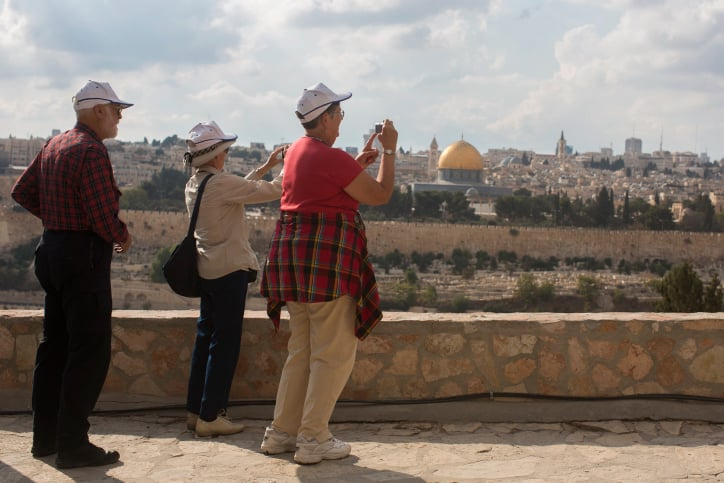
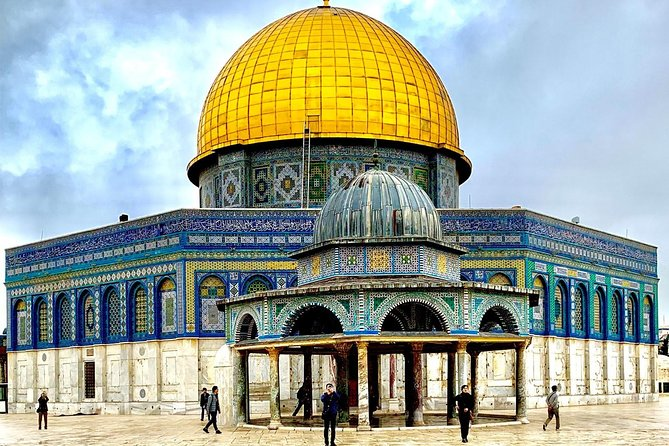
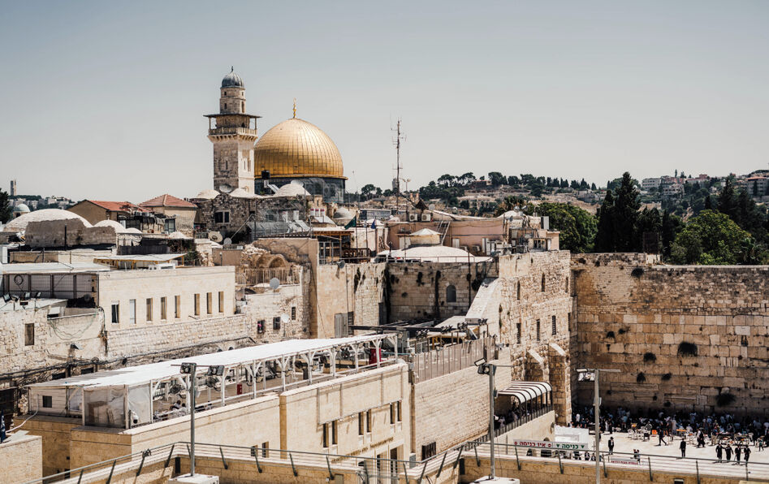

Jerusalem history
Jerusalem has an ancient history, beginning over 5,000 years ago and serving as a significant religious and political center for Judaism, Christianity, and Islam. Conquered and reconquered numerous times, notable periods include King David's establishment of it as the Jewish capital and builder of the First Temple, the Roman destruction of the Second Temple in 70 AD, the Crusades that saw Christian control, and its later development under the Islamic Ottoman Empire. Its status continues to be a central issue in the Israeli-Palestinian conflic
Jerusalem tourist
Jerusalem offers tourists historical, religious, and cultural attractions, with key sites including the Old City, home to the Western Wall, the Church of the Holy Sepulchre, and the Haram al-Sharif (Temple Mount); other popular attractions are the Israel Museum, Yad Vashem (The World Holocaust Remembrance Center), and the Tower of David. Visitors can explore different quarters, walk the city walls, follow the Via Dolorosa, and experience local life at the Mahane Yehuda Market.
Jerusalem as a holy city
Jerusalem is a holy city for Judaism, Christianity, and Islam because it houses sacred sites central to each faith's beliefs and practices. For Jews, it is home to the Western Wall, the last remnant of the Second Temple, and a historical center of worship. For Christians, it is the site of Jesus' Passion, death, and resurrection, with the Church of the Holy Sepulchre marking his tomb. For Muslims, the Dome of the Rock is on the Temple Mount, where they believe the Prophet Muhammad ascended to heaven
The War In Israel
The Gaza war is an armed conflict in the Gaza Strip and Israel, fought as part of the unresolved Israeli–Palestinian and Gaza–Israel conflicts dating back to the 20th century. The war began on 7 October 2023, when Hamas and other Palestinian militant groups launched a surprise attack on Israel, in which 1,195 Israelis and foreign nationals, including 815 civilians, were killed. 251 were taken hostage with the stated goal of forcing Israel to release Palestinian prisoners. Since the start of the Israeli offensive that followed, over 66,000 Palestinians in Gaza have been killed, almost half of them women and children, and more than 168,000 injured. A study in The Lancet estimated that traumatic injury deaths were undercounted by June 2024, while noting a potentially even larger death toll when "indirect" deaths are included.
The current war follows those of 2008–2009, 2012, 2014, and the 2021 clashes. After clearing militants from its territory, Israel launched a bombing campaign and invaded Gaza on 27 October with the stated objectives of destroying Hamas and freeing the hostages. Israeli forces launched numerous campaigns, including the Rafah offensive from May, three battles fought around Khan Yunis, and the siege of North Gaza from October, culminating in a 2025 offensive in Gaza City; and have assassinated Hamas leaders inside and outside of Gaza. A temporary ceasefire in November 2023 broke down, and a second ceasefire in January 2025 ended with a surprise attack by Israel in March.
The war has resulted in a humanitarian crisis in Gaza. Israel's tightened blockade cut off basic necessities, causing a severe hunger crisis, malnutrition, and imminent to confirmed famine as of September 2025.By early 2025, Israel had caused unprecedented destruction in Gaza and made large parts of it uninhabitable, leveling entire cities and destroying hospitals (including children's hospitals), religious and cultural landmarks, educational facilities, agricultural land, and cemeteries. Gazan journalists, health workers, aid workers and other members of civil society have been detained, tortured and killed. Nearly all of the strip's 2.3 million Palestinian population have been forcibly displaced. Over 100,000 Israelis were internally displaced at the height of the conflict. The first day was the deadliest in Israel's history, and the war is the deadliest for Palestinians in the broader conflict.
Though initially disputed, a wide consensus of scholarship has concluded that Israel is committing genocide in Gaza. A case accusing Israel of genocide is being reviewed by the International Court of Justice. Experts and human rights organizations have also stated that Israel and Hamas have committed other war crimes. The International Criminal Court has issued arrest warrants for Benjamin Netanyahu, Yoav Gallant and Mohammed Deif, though Deif's was withdrawn after an Israeli airstrike killed him. Torture and sexual violence have been committed by Palestinian militant groups and by Israeli forces.

Israel has received extensive military and diplomatic support from the United States, which has vetoed multiple pro-ceasefire resolutions from the UN Security Council. The war has reverberated regionally, with Axis of Resistance groups across several Arab countries and Iran clashing with the United States and Israel, including the 12-day Iran–Israel war. A year of strikes between Israel and Hezbollah led to the Israeli invasion of Lebanon, ongoing Israeli operations in Syria, as well as contributing to the fall of the Assad regime. The war continues to have significant regional and international repercussions, with large protests worldwide calling for a ceasefire, as well as a surge of antisemitism and anti-Palestinian racism.
Top Places to Visit in Jerusalem.
What Are the Top Places to Visit in Jerusalem? What you should visit:
